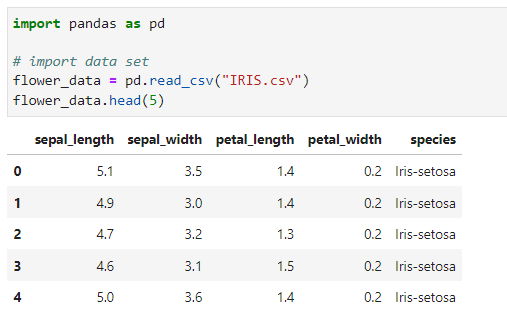

Visualizations
For each of the following visualizations, all of the code and datasets can be found here:
Scatterplots
A scatter plot is a type of plot or mathematical diagram using Cartesian coordinates to display values for typically two variables for a set of data. Note that both of the variables need to be quantitative variables for the plot to work. Below is an example of a scatterplot using the following data set & code:
Boxplot
Boxplots are standardized ways of displaying the distribution of data based on a five number summary (minimum, first quartile [Q1], median, third quartile [Q3] and maximum). It can tell you about your outliers and what their values are. Note that the data must be quantitative. Below is an example of a boxplot using the following data set & code:
Pie Chart
A pie chart is a circular statistical graphic which is divided into slices to illustrate numerical proportion. In a pie chart, the arc length of each slice is proportional to the quantity it represents. Note that the data must have one categorical variable paired with the quantity. Below is an example of a pie chart using the following data set & code:
Bar Graph
A bar chart or bar graph is a chart or graph that presents categorical data with rectangular bars with heights or lengths proportional to the values that they represent. The bars can be plotted vertically or horizontally. Note that the data must have one categorical variable paired with the quantity. Below is an example of a bar graph using the following data set & code:
Histogram
A histogram is a graph used to represent the frequency distribution of a few data points of one variable. Histograms often classify data into various “bins” or “range groups” and count how many data points belong to each of those bins. Note that the data must be quantitative. Below is an example of a histogram using the following data set & code:
Side-by-Side Bar Graph
As a variation of a bar chart, a side-by-side bar chart is similar to a stacked bar chart, except it puts bars side by side instead of stacking them. The side-by-side bar charts add a second dimension based on a standard bar chart, allowing for easier comparison between groups. Note that the data must be quantitative. Below is an example of a boxplot using the following data set & code:


Customization
Matplotlib allows for some customization as listed as below. In addition, there is an example using some of the customizations.